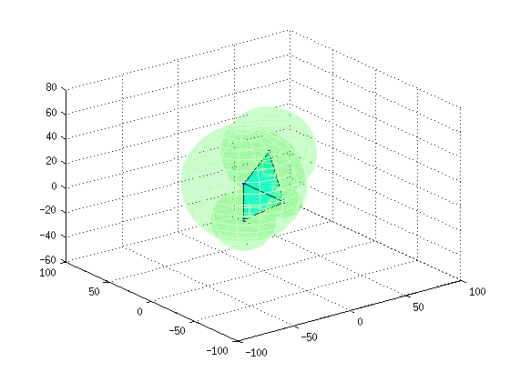
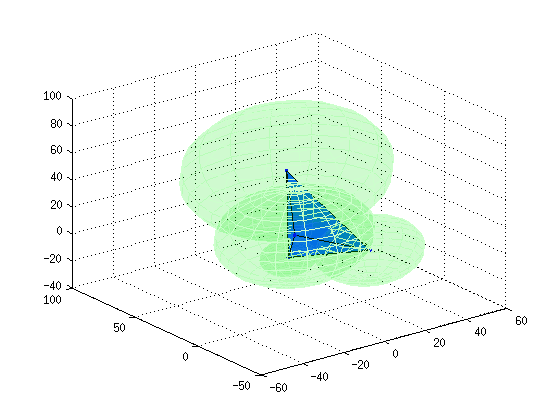
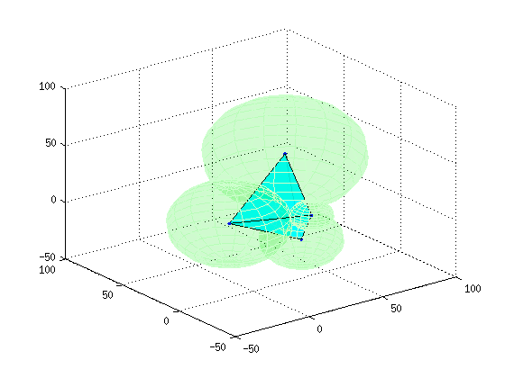
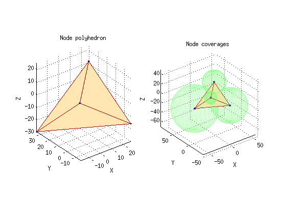

OPTIM_NODE_CONFIG
Calculates the best volume-optimized node configuration for the given base node coverage radii.
Copyright 2014 Sidharth Iyer 246964@gmail.com
Examples:
OPTIM_NODE_CONFIG('test_radii.csv') Optimizes the node configuration for the node radii in test_radii.csv
OPTIM_NODE_CONFIG('test_radii.csv', 3) Finds the best of 3 solutions for the node radii in test_radii.csv
OPTIM_NODE_CONFIG('test_radii.csv', 1, true) Finds 1 solution for the node radii in test_radii.csv in verbose fashion.
See also STRETCH_CHAINLINK, CHAINLINK, ATTENUATE
Contents
Function signature
function bestN = optim_node_config(inCSV, iters, verbose)
Input
inCSV: Comma-separated file with base node coverage radii
iters: Number of initial population iterations of the genetic algorithm to seed to select the best solution from
verbose: Boolean flag to specify output verbosity
Output
bestN(NUM, 3): Best node configuration such that row vector bestN(r, :) = [ Cx Cy Cz ], based on the maximal polyhedral volume V enclosed by it
Checking for malformed arguments
Input is preferred in a comma-delimited sequence of double-precision values without line breaks.
In the case that multi-line CSV input is provided, and is interpreted with ghost zeros, remove all commas from the end of each line.
argError = 'Malformed input arguments: Please refer to the source.'; switch nargin case 1 iters = 1; verbose = false; case 2 iters = uint64(iters); % Cast to unsigned 64-bit integer if iters > 0 verbose = false; else error(argError); end case 3 iters = uint64(iters); % Cast to unsigned 64-bit integer if iters <= 0 || ~islogical(verbose) error(argError); end otherwise error(argError); end
Input parsing and reformatting
Read and reshape the input from the CSV if needed into R(1, :) = [ R1 ... R<NUM> ]
R = csvread(inCSV); NUM = numel(R); % Number of nodes if size(R, 1) > 1 % Workaround for MATLAB's column-major matrix policy: R = reshape(R', 1, NUM); end
Calling STRETCH_CHAINLINK multiple times
STRETCH_CHAINLINK is called as many times as specified in iters, and the best among all optimized solutions is then selected.
N = zeros(NUM, 3, iters); % 3D matrix for incoming node configurations V = zeros(iters, 1); % Volumes of each incoming node configuration for i = 1 : iters [ N(:,:,i), V(i) ] = stretch_chainlink(R, verbose); end
Best Mean Stall
Generation f-count f(x) f(x) Generations
1 400 -617 -42.43 0
2 600 -1368 -65.59 0
3 800 -2530 -86.17 0
4 1000 -3978 1879 0
5 1200 -5258 2210 0
6 1400 -5389 4253 0
7 1600 -1.03e+04 5638 0
8 1800 -1.03e+04 7556 1
9 2000 -1.03e+04 1.469e+04 2
10 2200 -1.03e+04 1.655e+04 3
11 2400 -1.03e+04 1.225e+04 4
12 2600 -1.117e+04 1.714e+04 0
13 2800 -1.117e+04 1.696e+04 1
14 3000 -1.192e+04 3.061e+04 0
15 3200 -1.192e+04 2.752e+04 1
16 3400 -1.192e+04 2.966e+04 2
17 3600 -1.221e+04 2.513e+04 0
18 3800 -1.225e+04 3.001e+04 0
19 4000 -1.26e+04 3.794e+04 0
20 4200 -1.306e+04 3.604e+04 0
21 4400 -1.336e+04 3.413e+04 0
22 4600 -1.339e+04 3.712e+04 0
23 4800 -1.339e+04 3.449e+04 1
24 5000 -1.347e+04 3.318e+04 0
25 5200 -1.376e+04 4.853e+04 0
26 5400 -1.376e+04 4.296e+04 1
27 5600 -1.376e+04 5.109e+04 2
28 5800 -1.377e+04 5.796e+04 0
29 6000 -1.387e+04 5.687e+04 0
30 6200 -1.387e+04 4.991e+04 1
Best Mean Stall
Generation f-count f(x) f(x) Generations
31 6400 -1.387e+04 6.131e+04 2
32 6600 -1.387e+04 6.496e+04 3
33 6800 -1.387e+04 5.151e+04 0
34 7000 -1.471e+04 5.456e+04 0
35 7200 -1.471e+04 4.883e+04 1
36 7400 -1.471e+04 4.089e+04 2
37 7600 -1.471e+04 4.571e+04 3
38 7800 -1.471e+04 4.168e+04 4
39 8000 -1.471e+04 4.228e+04 5
40 8200 -1.471e+04 4.918e+04 6
41 8400 -1.471e+04 4.202e+04 7
42 8600 -1.471e+04 5.67e+04 8
43 8800 -1.473e+04 6.198e+04 0
44 9000 -1.473e+04 5.782e+04 1
45 9200 -1.486e+04 4.462e+04 0
46 9400 -1.489e+04 5.203e+04 0
47 9600 -1.489e+04 5.504e+04 1
48 9800 -1.499e+04 4.481e+04 0
49 10000 -1.499e+04 5.27e+04 1
50 10200 -1.499e+04 5.23e+04 2
51 10400 -1.499e+04 5.371e+04 3
52 10600 -1.499e+04 5.375e+04 4
53 10800 -1.499e+04 5.846e+04 5
54 11000 -1.499e+04 5.967e+04 6
55 11200 -1.499e+04 4.935e+04 7
56 11400 -1.499e+04 4.828e+04 0
57 11600 -1.499e+04 6.559e+04 1
58 11800 -1.499e+04 5.368e+04 2
59 12000 -1.499e+04 5.438e+04 3
60 12200 -1.499e+04 5.784e+04 4
Best Mean Stall
Generation f-count f(x) f(x) Generations
61 12400 -1.504e+04 5.632e+04 0
62 12600 -1.504e+04 5.282e+04 1
63 12800 -1.504e+04 6.403e+04 2
64 13000 -1.504e+04 5.91e+04 3
65 13200 -1.504e+04 7.183e+04 4
66 13400 -1.504e+04 6.226e+04 5
67 13600 -1.504e+04 5.85e+04 6
68 13800 -1.504e+04 5.229e+04 7
69 14000 -1.504e+04 5.771e+04 8
70 14200 -1.504e+04 4.989e+04 9
71 14400 -1.504e+04 6.759e+04 10
72 14600 -1.504e+04 5.744e+04 0
73 14800 -1.504e+04 5.26e+04 1
74 15000 -1.504e+04 6.273e+04 2
75 15200 -1.504e+04 6.608e+04 3
76 15400 -1.504e+04 6.233e+04 4
77 15600 -1.504e+04 5.939e+04 5
78 15800 -1.504e+04 5.566e+04 6
79 16000 -1.504e+04 4.209e+04 7
80 16200 -1.504e+04 5.234e+04 0
81 16400 -1.504e+04 4.971e+04 1
82 16600 -1.504e+04 5.633e+04 2
83 16800 -1.505e+04 6.647e+04 0
84 17000 -1.505e+04 6.2e+04 0
85 17200 -1.505e+04 6.169e+04 1
86 17400 -1.505e+04 5.186e+04 2
87 17600 -1.505e+04 7.637e+04 3
88 17800 -1.505e+04 7.173e+04 4
89 18000 -1.505e+04 4.823e+04 5
90 18200 -1.505e+04 5.609e+04 6
Best Mean Stall
Generation f-count f(x) f(x) Generations
91 18400 -1.505e+04 5.42e+04 7
92 18600 -1.505e+04 5.15e+04 8
93 18800 -1.505e+04 4.944e+04 9
94 19000 -1.505e+04 5.233e+04 10
95 19200 -1.506e+04 5.128e+04 0
96 19400 -1.506e+04 5.291e+04 1
97 19600 -1.506e+04 6.511e+04 2
98 19800 -1.506e+04 6.168e+04 3
Optimization terminated: average change in the fitness value less than options.TolFun.
N =
Columns 1 through 7
4.7075 -7.8025 -17.3234 0.2057 26.6253 -21.5711 19.5053
Columns 8 through 12
2.5128 24.9589 -44.8855 -12.8861 10.2639
Elapsed time is 15.889803 seconds.
sep =
Node1 Node2 Node3 Node4
______ ______ ______ _____
Node1 0 0 0 0
Node2 34.98 0 0 0
Node3 45.969 55.847 0 0
Node4 56.977 67.881 67.818 0
Best Mean Stall
Generation f-count f(x) f(x) Generations
1 400 -1264 61.09 0
2 600 -1967 307.8 0
3 800 -1967 281.1 1
4 1000 -3360 477 0
5 1200 -4629 1063 0
6 1400 -7545 1710 0
7 1600 -7604 6035 0
8 1800 -7604 8590 1
9 2000 -9510 1.186e+04 0
10 2200 -9510 1.532e+04 1
11 2400 -9892 1.784e+04 0
12 2600 -9892 2.324e+04 1
13 2800 -1.109e+04 3.163e+04 0
14 3000 -1.109e+04 2.888e+04 1
15 3200 -1.124e+04 3.23e+04 0
16 3400 -1.238e+04 2.536e+04 0
17 3600 -1.238e+04 3.153e+04 1
18 3800 -1.258e+04 2.37e+04 0
19 4000 -1.258e+04 2.407e+04 1
20 4200 -1.285e+04 2.572e+04 0
21 4400 -1.285e+04 3.383e+04 1
22 4600 -1.352e+04 3.38e+04 0
23 4800 -1.362e+04 3.826e+04 0
24 5000 -1.362e+04 3.665e+04 1
25 5200 -1.372e+04 4.916e+04 0
26 5400 -1.426e+04 3.733e+04 0
27 5600 -1.426e+04 3.877e+04 1
28 5800 -1.426e+04 3.346e+04 2
29 6000 -1.459e+04 3.663e+04 0
30 6200 -1.459e+04 3.679e+04 1
Best Mean Stall
Generation f-count f(x) f(x) Generations
31 6400 -1.467e+04 4.382e+04 0
32 6600 -1.467e+04 5.58e+04 1
33 6800 -1.467e+04 5.53e+04 2
34 7000 -1.496e+04 5.893e+04 0
35 7200 -1.496e+04 5.672e+04 1
36 7400 -1.496e+04 5.584e+04 2
37 7600 -1.507e+04 5.428e+04 0
38 7800 -1.507e+04 6.036e+04 1
39 8000 -1.507e+04 7.673e+04 2
40 8200 -1.507e+04 6.284e+04 3
41 8400 -1.507e+04 5.576e+04 4
42 8600 -1.507e+04 5.635e+04 5
43 8800 -1.507e+04 5.588e+04 6
44 9000 -1.507e+04 5.304e+04 7
45 9200 -1.51e+04 6.774e+04 0
46 9400 -1.51e+04 5.585e+04 1
47 9600 -1.51e+04 5.664e+04 2
48 9800 -1.51e+04 3.78e+04 3
49 10000 -1.51e+04 4.98e+04 4
50 10200 -1.51e+04 4.959e+04 5
51 10400 -1.51e+04 6.739e+04 6
52 10600 -1.51e+04 6.465e+04 7
53 10800 -1.51e+04 5.353e+04 8
54 11000 -1.51e+04 5.435e+04 9
55 11200 -1.51e+04 5.676e+04 10
56 11400 -1.51e+04 5.119e+04 11
57 11600 -1.51e+04 5.573e+04 12
58 11800 -1.51e+04 5.892e+04 13
59 12000 -1.51e+04 5.443e+04 14
60 12200 -1.51e+04 5.926e+04 15
Best Mean Stall
Generation f-count f(x) f(x) Generations
61 12400 -1.51e+04 4.892e+04 16
62 12600 -1.51e+04 5.156e+04 17
63 12800 -1.51e+04 5.789e+04 18
64 13000 -1.51e+04 5.373e+04 19
65 13200 -1.51e+04 5.064e+04 20
66 13400 -1.51e+04 6.442e+04 21
67 13600 -1.51e+04 6.355e+04 22
68 13800 -1.513e+04 5.304e+04 0
69 14000 -1.513e+04 5.284e+04 1
70 14200 -1.513e+04 4.844e+04 2
71 14400 -1.513e+04 5.01e+04 0
72 14600 -1.513e+04 3.988e+04 1
73 14800 -1.513e+04 4.196e+04 2
74 15000 -1.513e+04 5.435e+04 3
75 15200 -1.513e+04 4.902e+04 4
76 15400 -1.514e+04 4.031e+04 0
77 15600 -1.514e+04 2.964e+04 0
78 15800 -1.514e+04 3.67e+04 1
79 16000 -1.514e+04 4.145e+04 2
80 16200 -1.514e+04 4.225e+04 3
81 16400 -1.514e+04 4.617e+04 4
82 16600 -1.514e+04 4.632e+04 5
83 16800 -1.514e+04 3.947e+04 6
84 17000 -1.514e+04 4.083e+04 7
85 17200 -1.514e+04 4.738e+04 8
86 17400 -1.514e+04 4.563e+04 9
87 17600 -1.514e+04 5.434e+04 10
Optimization terminated: average change in the fitness value less than options.TolFun.
N =
Columns 1 through 7
-9.7001 18.6715 1.1388 -11.8051 -2.5751 28.8688 33.2168
Columns 8 through 12
27.4407 15.0905 11.8843 -27.0841 -25.0444
Elapsed time is 14.843353 seconds.
sep =
Node1 Node2 Node3 Node4
______ ______ ______ _____
Node1 0 0 0 0
Node2 34.997 0 0 0
Node3 45.972 55.837 0 0
Node4 56.965 63.785 70.985 0
Best Mean Stall
Generation f-count f(x) f(x) Generations
1 400 -1207 -53.19 0
2 600 -1278 253.3 0
3 800 -3330 965.6 0
4 1000 -4147 932.5 0
5 1200 -4147 1284 1
6 1400 -6137 782.9 0
7 1600 -7067 2596 0
8 1800 -7067 5982 1
9 2000 -7671 8695 0
10 2200 -8262 1.004e+04 0
11 2400 -9133 1.303e+04 0
12 2600 -9133 2.098e+04 1
13 2800 -1.099e+04 2.949e+04 0
14 3000 -1.099e+04 2.543e+04 1
15 3200 -1.109e+04 1.421e+04 0
16 3400 -1.129e+04 2.202e+04 0
17 3600 -1.239e+04 2.352e+04 0
18 3800 -1.239e+04 2.753e+04 1
19 4000 -1.239e+04 3.232e+04 2
20 4200 -1.278e+04 3.379e+04 0
21 4400 -1.299e+04 3.155e+04 0
22 4600 -1.487e+04 3.627e+04 0
23 4800 -1.487e+04 4.017e+04 1
24 5000 -1.487e+04 4.555e+04 2
25 5200 -1.487e+04 4.142e+04 3
26 5400 -1.487e+04 4.52e+04 4
27 5600 -1.487e+04 4.448e+04 5
28 5800 -1.487e+04 5.378e+04 6
29 6000 -1.487e+04 5.066e+04 7
30 6200 -1.487e+04 4.546e+04 8
Best Mean Stall
Generation f-count f(x) f(x) Generations
31 6400 -1.487e+04 5.527e+04 9
32 6600 -1.487e+04 5.208e+04 10
33 6800 -1.489e+04 6.37e+04 0
34 7000 -1.489e+04 7.267e+04 1
35 7200 -1.489e+04 6.72e+04 2
36 7400 -1.489e+04 6.739e+04 3
37 7600 -1.49e+04 6.383e+04 0
38 7800 -1.49e+04 5.433e+04 1
39 8000 -1.49e+04 6.621e+04 2
40 8200 -1.49e+04 5.911e+04 3
41 8400 -1.49e+04 4.86e+04 4
42 8600 -1.49e+04 6.022e+04 5
43 8800 -1.496e+04 7.192e+04 0
44 9000 -1.496e+04 6.389e+04 1
45 9200 -1.496e+04 7.055e+04 2
46 9400 -1.496e+04 5.782e+04 3
47 9600 -1.496e+04 5.856e+04 4
48 9800 -1.496e+04 6.009e+04 5
49 10000 -1.496e+04 6.274e+04 6
50 10200 -1.496e+04 6.098e+04 7
51 10400 -1.496e+04 5.088e+04 8
52 10600 -1.496e+04 6.577e+04 9
53 10800 -1.496e+04 5.188e+04 10
54 11000 -1.496e+04 4.799e+04 11
55 11200 -1.5e+04 5.068e+04 0
56 11400 -1.5e+04 4.916e+04 1
57 11600 -1.5e+04 5.106e+04 2
58 11800 -1.5e+04 5.134e+04 3
59 12000 -1.5e+04 6.423e+04 4
60 12200 -1.5e+04 6.447e+04 5
Best Mean Stall
Generation f-count f(x) f(x) Generations
61 12400 -1.5e+04 6.567e+04 6
62 12600 -1.5e+04 5.929e+04 7
63 12800 -1.5e+04 6.074e+04 8
64 13000 -1.502e+04 5.997e+04 0
65 13200 -1.502e+04 6.49e+04 1
66 13400 -1.502e+04 5.828e+04 2
67 13600 -1.502e+04 5.046e+04 3
68 13800 -1.502e+04 5.036e+04 4
69 14000 -1.502e+04 4.68e+04 5
70 14200 -1.502e+04 4.969e+04 6
71 14400 -1.502e+04 6.264e+04 7
72 14600 -1.502e+04 5.174e+04 8
73 14800 -1.502e+04 6.357e+04 9
74 15000 -1.502e+04 5.167e+04 10
75 15200 -1.502e+04 5.182e+04 11
76 15400 -1.502e+04 4.72e+04 12
77 15600 -1.502e+04 4.192e+04 13
78 15800 -1.502e+04 4.352e+04 14
79 16000 -1.502e+04 4.351e+04 15
80 16200 -1.502e+04 5.591e+04 16
81 16400 -1.502e+04 5.788e+04 17
82 16600 -1.502e+04 5.373e+04 18
83 16800 -1.502e+04 5.682e+04 19
84 17000 -1.502e+04 5.768e+04 20
85 17200 -1.502e+04 5.824e+04 21
86 17400 -1.502e+04 4.891e+04 22
87 17600 -1.502e+04 4.417e+04 23
88 17800 -1.502e+04 5.462e+04 24
89 18000 -1.502e+04 6.385e+04 25
90 18200 -1.502e+04 5.27e+04 26
Best Mean Stall
Generation f-count f(x) f(x) Generations
91 18400 -1.502e+04 4.785e+04 27
92 18600 -1.502e+04 4.897e+04 28
93 18800 -1.502e+04 5.578e+04 29
Optimization terminated: average change in the fitness value less than options.TolFun.
N =
Columns 1 through 7
-11.6805 -9.0691 7.7546 11.6253 11.0480 24.4048 25.5094
Columns 8 through 12
-19.5618 -17.1631 -18.7429 31.5696 -31.5765
Elapsed time is 15.432245 seconds.
sep =
Node1 Node2 Node3 Node4
______ ______ ______ _____
Node1 0 0 0 0
Node2 35.001 0 0 0
Node3 45.979 53.457 0 0
Node4 56.994 66.912 69.141 0
    Sorting solutions based on optimality
Sort node configurations based on the descending order of the polyhedral volume enclosed by each:
[ V, order ] = sort(V, 'descend');
N = N(:,:,order);
Display sorted solutions if verbosity is required:
if verbose == true V N end
V =
1.0e+04 *
1.5139
1.5058
1.5019
N(:,:,1) =
-9.7001 18.6715 1.1388
-11.8051 -2.5751 28.8688
33.2168 27.4407 15.0905
11.8843 -27.0841 -25.0444
N(:,:,2) =
4.7075 -7.8025 -17.3234
0.2057 26.6253 -21.5711
19.5053 2.5128 24.9589
-44.8855 -12.8861 10.2639
N(:,:,3) =
-11.6805 -9.0691 7.7546
11.6253 11.0480 24.4048
25.5094 -19.5618 -17.1631
-18.7429 31.5696 -31.5765
Display the ranks of each iteration:
if iters > 1 order end
order =
2
1
3
Saving the output to files
Save the best node configuration to inCSV-optim_node_config.csv:
bestN = N(:,:,1); % Save only the best node configuration outN = [ inCSV, '-optim_node_config.csv' ]; % Append to filename csvwrite(outN, bestN);
Save the maximal volume achieved to inCSV-optim-vol.txt:
bestV = V(1); % Save only the maximal volume outV = [ inCSV, '-optim_vol.txt' ]; % Append to filename csvwrite(outV, bestV);
Return the best configuration among the calculated optimized solutions:
end